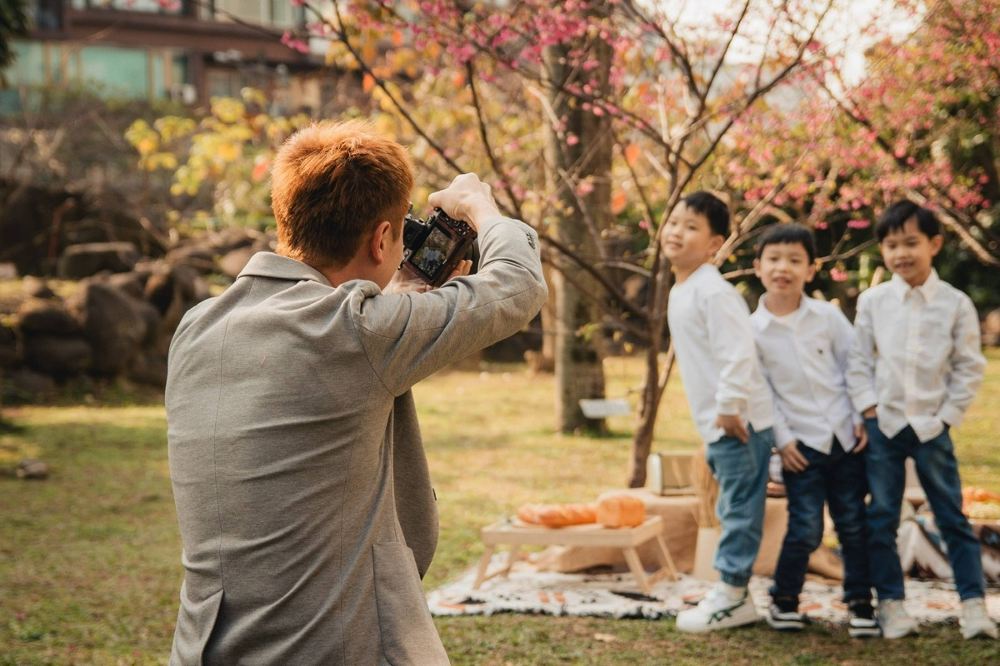
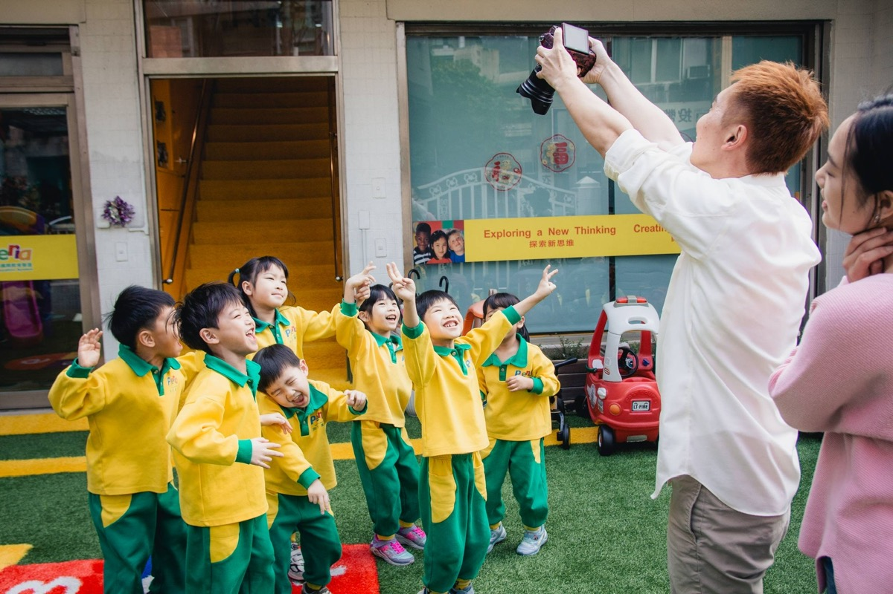

文章摘要
本文從學士服的歷史起源談起，說明畢業服裝為何成為「畢業」的象徵，以及台灣幼兒園畢業照中常見的服裝類型與文化脈絡。內容涵蓋日式、歐美與台灣在地風格的差異，正式學士服與創意服裝拍攝的定位，便服、制服與主題服裝各自適合的拍攝方式，以及現代畢業照為何越來越重視自然感與個人特色。文末提供「依學校風格選擇服裝」與「服裝與場景搭配出故事感」的實務建議，兼具知識性、可讀性與攝影應用價值。
幼兒園畢業照服裝的歷史、文化演變與現代拍攝風格
幼兒園畢業照裡，孩子穿學士服、戴方帽的畫面，在台灣早已見怪不怪。可是真要問：「為什麼畢業要穿這樣？這套服裝從哪裡來？」能說清楚的人其實不多。學士服本來屬於高等教育與學位授予的象徵，怎麼會一路「下放」到幼兒園？各國幼兒園的畢業服裝又各自長什麼樣子？而當大家越來越想要自然、有故事感的畢業照時，服裝該怎麼選、怎麼搭？這篇從歷史與文化脈絡談起，再落到台灣的實務與拍攝應用，給關心畢業照意義與風格的老師、家長與攝影工作者一點有脈絡的參考。
一、學士服的歷史來源
1.1 中世紀歐洲的起源
學士服（academic dress / graduation gown）的源頭，要追溯到十二、十三世紀的歐洲。那時候大學制度才在成形，在大學裡讀書、教書的，多半是神職人員或跟教會關係很近的學者。他們平日穿的長袍、披肩跟帽飾，跟修道院裡修士、教士的服裝是一脈相承的——辨識身份、保暖，也帶著「脫俗求學」的象徵。日子久了，這套打扮就成了大學成員的正式服飾。
所以學士服一開始並不是「畢業那天才穿」，而是學者在學期間的日常與禮儀服裝。等到畢業、授予學位的時候，穿著同一套（或它的變體）去接證書、接受祝福，自然而然就變成「完成學業」儀式的一部分。
1.2 組成元素與演變
現代我們熟悉的學士服，通常包含幾個元素：
- 長袍（Gown）：寬鬆長袍，早期多為黑色，袖型與長度因學位（學士、碩士、博士）而異。十六世紀後，牛津、劍橋等校逐漸採用敞開式長袍（open-front gown），與早期封閉式長袍不同。
- 披肩（Hood）：披掛在肩上的長條布，顏色與襯裡常用來表示學科或學校，是辨識「來自哪個學院」的標誌。
- 方帽（Mortarboard / 四方帽）：平頂、方形、頂上有一撮流蘇的帽子，據說形狀來自中世紀學者使用的「書板」或泥瓦匠的托盤，流蘇在畢業時從帽簷一側撥到另一側，象徵「學位完成」。
- 流蘇（Tassel）：帽頂的流蘇，顏色有時與學科對應（例如金黃代表理學、白色代表文學）。
隨時間演變，不同國家與學校在顏色、款式與配飾上發展出各自傳統；但「長袍＋帽＋流蘇」的基本組合，至今仍是全球最易辨識的「畢業」符號之一。
1.3 從大學到中小學、幼兒園
學士服原本與「大學學位」緊密綁在一起。二十世紀後，美國、日本等地的中小學與幼兒園逐漸在畢業典禮或畢業照中採用「類學士服」或簡化版學士服，用意是讓孩子體驗「長大、完成階段」的儀式感，也讓照片具有辨識度與紀念性。這股風氣透過文化輸出與商業攝影方案傳入台灣，加上台灣家長與園所對「畢業」與「留念」的重視，幼兒園畢業照穿學士服便成為常見選項，甚至被視為「標配」。
二、畢業服裝為什麼會成為畢業照象徵
2.1 儀式感與辨識度
穿上跟「畢業」連在一起的服裝，孩子跟家長心裡會自然切換成「今天是特別的日子」。服裝像一個開關，提醒大家：今天不是在玩，是在完成一個階段。另一方面，學士服在視覺上非常明確——黑袍、方帽、流蘇——一看就知道是畢業照。對要做畢業紀念冊、或多年後翻相本的人來說，這種辨識度很有用：一眼就能想起「那是畢業那年」。
2.2 跨文化的「畢業」符號
- 在許多國家，學士服已超越「大學專屬」，成為「畢業」的通用符號。幼兒園、小學、中學的畢業照或典禮中出現學士服，家長與社會大多能理解其意涵，而不會覺得「只有大學生才能穿」。這種符號的普及，使得學士服在商業攝影與園所方案中容易被採用與接受。
2.3 爭議與反思
- 也有人認為，學士服原本象徵的是「高等教育與學位」，若過度下放到幼兒園，可能稀釋其原本的嚴肅意義；或認為應讓幼兒園發展出屬於自己的「畢業服」或「成長服」，而非沿用大學符號。這類觀點在部分國家或教育圈中有所討論。實務上，台灣多數園所仍以學士服為主流，但已有園所開始嘗試「學士服＋便服」「主題服裝」或「創意服」的組合，讓畢業照在保留儀式感的同時，也更有園所特色。
三、台灣幼兒園畢業照常見服裝類型
3.1 學士服（標準款）
黑色（或深藍、深灰）長袍、方帽、流蘇，多半是租借或園所統一採購，尺寸按孩子身高區分。顏色以黑、深藍最常見，也有園所用酒紅、綠色等來區隔年度或做園所識別。拍攝上，學士服走的是正式、儀式感強的路線，很適合班級大合照、師生合照、個人證件風這種「一眼就認出是畢業照」的畫面，所以多數園所會把學士服照放在紀念冊前幾頁，當成畢業的主視覺。

攝影師小巴老師拍攝
3.2 便服
孩子穿自己的日常服裝，不統一款式與顏色，通常出現在「第二套」或戶外、生活感的段落。便服照輕鬆、自然，生活感強，能呈現孩子平時的樣貌跟個性，跟學士服照正好形成對比：正式的那一面 vs 日常的那一面。在玩耍、互動中，也比較容易拍到自然表情。攝影師若擅長引導，便服段落常常能產出那種「多年後翻起來還是會笑」的畫面。

攝影師小巴老師拍攝
3.3 園服／制服
園所統一的園服或制服（例如 Polo 衫搭短褲、洋裝等），很多園所平日就在穿，畢業照時拿來當「我們是某某幼兒園」的集體識別剛剛好。拍攝定位介於學士服的正式跟便服的隨性之間：整齊、有團體感，又比學士服輕鬆，很適合班級團體照，或園所想強調「園所 identity」的畫面。
3.4 主題服裝
依園所年度主題、節慶或創意設計的服裝——森林小學（綠衣、探險風）、海洋主題（藍白、水手元素）、小紳士小淑女（襯衫、小禮服）、民族風、運動風等——辨識度高、有話題性，很適合塞進紀念冊的「主題頁」或「創意頁」。主題服裝通常得搭配對應的場景跟道具，拍攝時間跟成本都會往上加，但執行得當的話，能讓那一屆的畢業照很有獨特性。
3.5 混合搭配
- 常見組合：學士服（必拍）＋便服（第二套）、學士服＋園服、學士服＋便服＋主題服（三套）。園所可依預算、時間與風格定位選擇「兩套」或「三套」，再與攝影師討論每套的拍攝比重與場景。
四、日式、歐美、台灣常見風格差異
4.1 日本
日本幼兒園與小學的畢業照很重視「整齊」跟「禮儀」：服裝統一、姿勢端正、表情含蓄。學士服或類似制式的畢業服很常見，團體照多是規矩的排列，個人照也偏「站好、微笑」的沙龍感。這幾年雖然有園所開始做比較自然的外景或生活照，但整體還是以整齊、可愛、不出錯為主。園所若想要秩序感強、畫面乾淨，可以參考日式在服裝統一跟構圖對稱上的處理；想多一點溫度的話，就在這個基礎上加一點互動跟自然表情。
4.2 歐美（尤其美國）
美國幼兒園跟小學畢業照也常見學士服（cap and gown），但風格比較多元：有的正式、有的輕鬆，有的會加彩帶、氣球、手舉牌等道具。個人照跟團體照裡，大笑、跳躍、搞怪這類「放得開」的畫面比較多，整體氛圍偏歡樂、個人化。園所若想要畢業照歡樂、有活力、每個孩子都有個性，可以參考美式在表情跟肢體上的放鬆程度，以及道具跟場景的運用。
4.3 台灣
- 現況：台灣幼兒園畢業照長期受日式與商業攝影影響，學士服＋團體照＋個人照是主流；近年隨著「自然風」「故事感」攝影的興起，便服、戶外、互動式引導的占比逐漸提高。許多園所採「學士服保留儀式感＋便服或第二套增加生活感」的雙軌做法，既滿足家長對「正式畢業照」的期待，也滿足「想要自然一點」的需求。
- 小結：台灣市場目前是「傳統學士服」與「自然／創意風格」並存，園所可依自身定位與家長偏好選擇偏傳統、偏自然、或兩者並重。
五、正式學士服與創意服裝拍攝的差異
5.1 正式學士服拍攝
- 重心：儀式感、辨識度、整齊。畫面通常較「正」——孩子站好、看鏡頭、姿勢統一，方便製作紀念冊的「標準頁」與團體照。
- 優點：出片穩定、家長接受度高、符合「畢業照就該長這樣」的想像。適合作為「主菜」——至少保留一組學士服團體照與個人照。
- 限制：若從頭到尾都是學士服＋站好，表情與氛圍容易單一，多年後翻閱可能覺得「每張都差不多」。
5.2 創意服裝拍攝
創意拍攝的重心在主題、故事跟個人特色。服裝可能是便服、主題服或第二套，場景跟動作都比較彈性，攝影師可以引導互動、抓拍。好處是畫面多元、有故事感，容易拍到孩子真實的笑容跟個性，讓紀念冊跟電子檔不只「有畢業的樣子」，還有「有生活的樣子」。不過創意拍攝需要較多時間、場景準備跟攝影師的引導能力；園所若預算或時間有限，先把學士服拍好，有餘力再加一套便服或主題就好。
5.3 比例怎麼抓
實務上，很多園所會採「學士服為主（約一半到六成的拍攝時間或張數）、便服或創意為輔（約四到五成）」的比例。這樣既保留儀式感，又讓整本相本更有層次、更耐看。
六、便服、制服、主題服裝各自適合的拍攝方式
6.1 便服
便服適合放在戶外、校園角落、遊戲區、閱讀角這類生活化場景。便服本身沒有「統一感」，在室內白背景前站一排容易顯得雜亂；換到戶外或情境裡，讓孩子走動、玩耍、跟同學互動，「各穿各的」反而能突出每個孩子的個性。拍攝方式以引導跟抓拍為主，而不是「站好、一二三」。攝影師可以設計簡單遊戲、聊聊天、或讓孩子自由活動，再從中捕捉表情跟互動。便服照拍得好不好，往往就看孩子有沒有放鬆、攝影師能不能在放鬆裡抓到好畫面。
6.2 制服／園服
- 場景：教室、禮堂、樓梯、校門口等「有園所感」的場景適合，可傳達「我們是這個園所的一分子」。整齊排列的團體照、或坐姿端正的班級照，都能發揮制服的「統一」優勢。
- 拍攝方式：可兼顧「整齊」與「一點互動」——例如先拍一張全班坐好的正式照，再拍幾張孩子舉手、比 Ya、或與老師互動的輕鬆版，讓同一套服裝有不同氛圍。
6.3 主題服裝
- 場景：必須與主題呼應。森林風就配綠意、木頭、帳篷；海洋風就配藍白、沙、船或泳池邊；紳士淑女風可配簡約背景或輕奢感道具。主題服若沒有對應場景，容易顯得「只換了衣服」而缺乏說服力。
- 拍攝方式：可設計簡單情境——例如「我們要去探險」「我們在野餐」——讓孩子進入情境，再從中抓拍。主題服裝的拍攝通常需要較多前置溝通（服裝、道具、場景、動線），建議與攝影師共同規劃。
七、現代畢業照為什麼越來越重視自然感與個人特色
7.1 審美與需求的演變
- 過去：畢業照多被視為「證件式」或「紀念式」——有一張正式的、穿學士服的、站好的照片即可。商業攝影也常以「快速、大量、標準化」為優先，導致許多畢業照長得很像。
- 現在：越來越多家長與園所希望畢業照「耐看」「有溫度」「多年後翻起來還會笑」。自然表情、互動瞬間、生活感與個人特色被重視，帶動「自然引導」「故事感」「便服與情境」等拍攝方式的興起。
7.2 社交與記憶的價值
- 現代家長習慣在社群分享照片，也更在意「我的孩子有沒有被好好拍」「照片裡的孩子像不像他」。制式、僵硬的畢業照較難引發共鳴；自然、有情緒、有故事的畫面則容易被保留、分享與回味。對園所來說，能提供「有辨識度又有溫度」的畢業照，也有助於口碑與來年招生。
7.3 攝影風格的供給
- 親子寫真、家庭攝影的「自然風」在台灣已發展多年，不少攝影師將這套方法帶入幼兒園畢業照——減少「一二三笑」的指令，增加遊戲、聊天與等待，讓孩子在放鬆中流露真實表情。這類供給的增加，也讓園所與家長有更多選擇，進而推高對「自然感」的期待。
八、如何依照學校風格選擇適合的畢業照服裝
8.1 園所定位
傳統、重視禮儀的園所，維持學士服為主、園服為輔就很好，拍攝時多保留「正式、整齊」的畫面，有餘力再加一點便服或互動照。活潑、創意型的園所，可以加大便服跟主題服的比例，或每年設計不同主題（森林、海洋、探險等），讓畢業照變成園所特色的延伸。小班制、重視個人的，不妨給每人多一點個人照跟互動照，服裝上也讓便服或第二套有較多表現空間。預算或時間若有限，先把學士服團體照跟個人照做好，確保「有畢業的樣子」，還有餘力再考慮加一套便服或縮短版的主題拍攝。
8.2 家長期待
詢價或說明會時，不妨簡單問一下家長偏好：想要多一點正式學士服，還是多一點自然、生活感？很多家長會說「都要」，那就直接說明「我們會拍學士服跟便服（或第二套），兩類都會有」，再依園所風格決定兩邊的比重。
8.3 跟攝影師的共識
服裝選擇會直接影響拍攝時間、場景跟風格。園所若已經決定「學士服＋便服」或「學士服＋主題服」，最好跟攝影師先講清楚：每套服裝預計拍多久、需要哪些場景、風格上偏正式還是偏自然。共識越清楚，當天執行越順，成品也越容易符合期待。
九、若希望照片更有故事感，服裝與場景如何搭配
9.1 學士服＋校園場景
學士服不見得非在室內白背景前拍不可。帶孩子到校園一角——操場、樹下、樓梯、教室門口——學士服的「正式」跟校園的「熟悉」一對比，畫面既有畢業感，又有「這是我們學校」的歸屬感。光線跟場景選得好，學士服照一樣能很有故事感。

攝影師小巴老師拍攝
9.2 便服＋生活情境
便服最適合搭配「在做某件事」的情境：一起看書、玩球、走路、笑。攝影師可以設定簡單情境（「我們來找一片最喜歡的葉子」「比賽誰跳得高」），讓孩子在情境裡自然互動，再從中抓拍。服裝跟場景都是「生活」的延伸，故事感自然會出來。
9.3 主題服＋主題場景
主題服跟主題場景得對得上：森林風就真的到有樹有草的地方，海洋風就找藍白或水元素。孩子穿上主題服、進到主題場景，再給一點簡單任務或遊戲，很容易產出「我們正在探險」「我們正在野餐」這類有敘事的畫面。主題服配無關背景，故事感會斷掉，能避就避。
9.4 對比與層次
同一本紀念冊或同一場拍攝裡，可以刻意安排「正式 vs 輕鬆」「整齊 vs 自然」「室內 vs 戶外」的對比。比方前幾頁是學士服團體照跟個人照（儀式感），後幾頁是便服互動跟生活照（溫度感），翻起來有節奏、有層次，整體故事感會更完整。
十、結語
學士服從中世紀歐洲學者的袍服一路演變，到今天已經是全球通用的「畢業」符號，在台灣幼兒園畢業照裡也穩穩佔有一席之地。知道這段歷史跟文化脈絡，我們在採用學士服的時候，就既能保留儀式感，又不會被單一形式綁架——可以學士服為主、便服或主題服為輔，讓畢業照既有「畢業的樣子」，也有「孩子的樣子」。現代畢業照越來越重視自然感跟個人特色，服裝跟場景的搭配只要兼顧辨識度跟故事感，照片在多年後還是會耐看、有溫度。園所若正在規劃畢業照的服裝與風格，不妨先想清楚自己的定位跟家長期待，再跟攝影師好好討論服裝組合、場景跟拍攝方式，讓這一年的畢業照既接得住傳統，也留得住屬於這一屆的獨特記憶。
本文由小巴老師攝影團隊整理，以台灣幼兒園畢業照實務與文化脈絡為情境。若您的園所正在規劃畢業照並希望兼顧儀式感與自然風格，歡迎透過網站作品集與服務介紹進一步了解我們的拍攝方式。